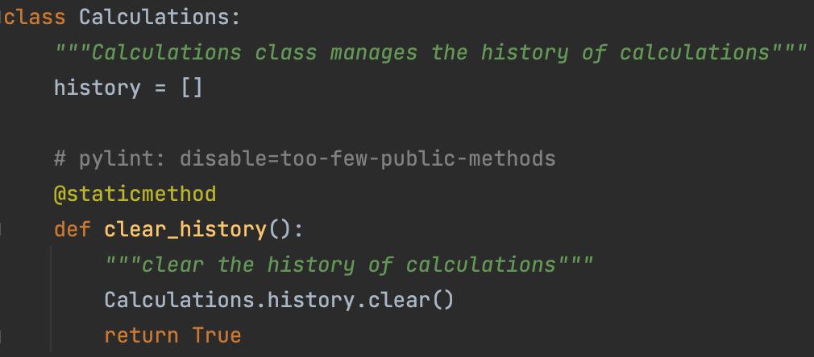

Rodney Nuñez / Mar 18, 2022
Object-Oriented Programming Principles: The Calculator Program
Encapsulation
GeeksforGeeks: DefinitionThe concept of Encapsulation is one that makes Object-Oriented Programming stand out from spaghetti code and procedural programming. The fact that both properties and methods alike can be bundled into their own units is amazing and it gives classes all the power. In procedural programming or in beginner python spaghetti code, functions hold all the power and they tend to get extremely long, seeing as though all data needs to be readily accessible in the open. Speaking of readily accessible; the access modifier keywords available for class usage like public, private, and protected add another layer to the Encapsulation as you specifically dictate how you want the properties/methods to behave. The results of all of this include methods that are incredibly simple to set up and objects that behave as their own entities but follow the rules dictated by the class that they're an instance of. Let's take the calculator code as an example:
As seen above, the class named Calculations is a class that is responsible for handing the history of calculations. The class has a property named history which initializes itself as an empty list. This list fills itself with the calculator's history depending on which method you invoke. Writing methods for the class is just as easy as writing that first one seen there. On top of this, any number of Calculations objects can be made and although they will share the same behavior/methods as all the other ones, each will be its own entity in memory.
Abstraction
AskPython: DefinitionI mentioned earlier that object-oriented programming principles allow for short methods. The principle that is Abstraction along with Encapsulation are the primary causes for short methods and ease of use; although Abstraction focuses more on the ease of use part. Let's get to the details: Abstraction refers to the fact that some class properties and methods may be intentionally "hidden" in order to prevent confusion and not overcomplicate things. This doesn't mean that such properties or methods are never references as they would still be put to use within other accessible methods. Let's take the tuple() method that's used within the calculator code as an example:
As seen above, one of the methods within the Calculation class is one that takes an argument and converts it to a tuple of floats. Within the convert_args_to_tuple_of_float method, the tuple() method (or caster, if you will) passes the recently created array as an argument. In the end, you get your expected tuple. Similar to the way that we press buttons on the remote control and expect results without knowing how we got them, we got our tuple. However, Further inspection of the tuple() method leads to a static method that creates and returns a new tuple of that type, thus providing us an example of Abstraction. This isn't the best example as the method isn't directly tied to the Calculator class, but hopefully you get the point.
Inheritance
GeeksforGeeks: DefinitionObject-Oriented Programming represents real-world relations better than any spaghetti code ever could. Classes like the aforementioned Calculator class have properties and methods; just like the ones in real life. Well, the principle that is Inheritance plays a big role in solidifying the real-world aspects of object-oriented programming by introducing tied relationships. As the name suggests, Inheritance allows for one class to inherit from another. The "child" class inherits all the properties and methods from the parent class and adds its own, meaning the child is dependent on the parent. For example, it would make sense to have a Yorkie class extend a Dog class, seeing as though Yorkies share many similarities with other dogs but throw their own characteristics and classiness into the mix. Let's see if we can find an example of this within the Calculator code: tuple() method that's used within the calculator code as an example:
Though it is an abstract class, we can see the parent class Calculation and the factory method it uses to push out children. Calculation can't be instantiated as it is abstract, but it's children will have access to that constructor that is seen there for instantiation as well as any properties/methods that it may have. This parent class can have multiple children, but the children can only have one parent.
Polymorphism
GeeksforGeeks: DefinitionPolymorphism is synonymous for having multiple forms. Let's say that you had two classes that had methods with identical header signatures but with different behaviors: Putting them into some sort of array and calling that method should return the correct operation for each of those objects. This is due to the fact that the compiler knows exactly where to call it from, meaning this ties in nicely with the concept that is Encapsulation. Let's see if we can find an example of this within the Calculator code: tuple() method that's used within the calculator code as an example:
The image above shows two separate classes, Multiplication and Subtraction, that have a method named getResult() with the exact same header. The method for Multiplication multiplies before returning and the behavior for Subtraction's getResult() method should be obvious. That being said, the compiler would be able to discern which getResult() is being called depending on which class the object being used to access the method is an instance of.